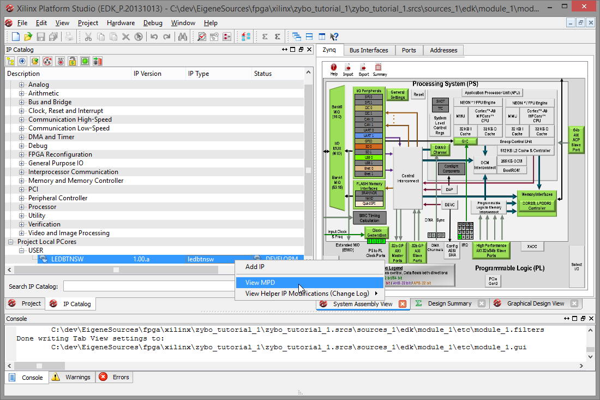
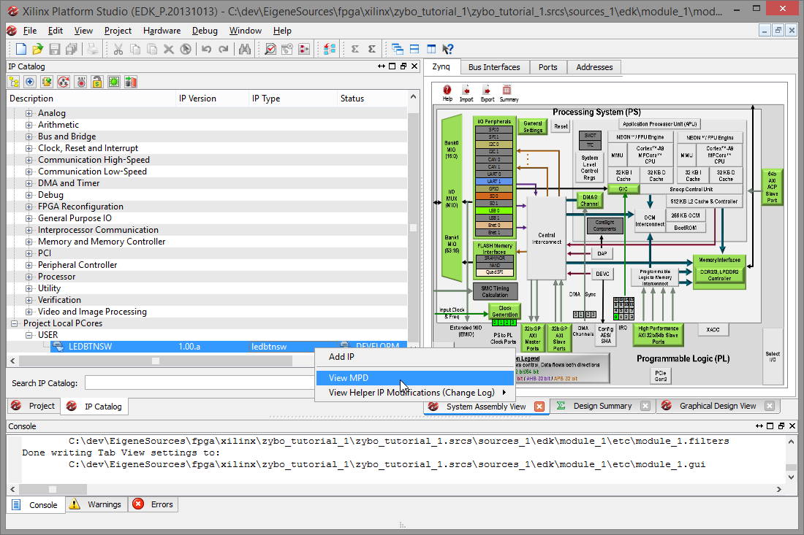

Part 1: Setting up a new project
Creating a new project


Creating the embedded project


Preparing the board


Creating a peripheral


 

")
Adding the peripheral


 Leave XPS open for the moment since we will need it again.
Leave XPS open for the moment since we will need it again.
Parts of the tutorial
- Previous: Index.
- Next: Editing the IP logic.